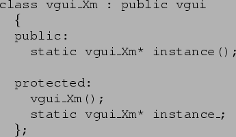
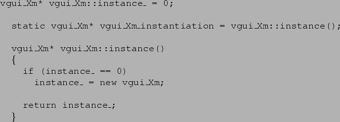
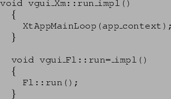
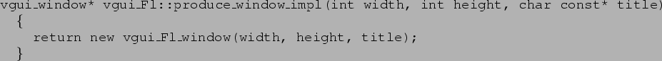

from vgui_Xm.h

from vgui_Xm.C

The line containing vgui_Xm_instantiation causes the (sole) instance of vgui_Xm to be created and due to the ctor vgui::vgui being called, vgui_Xm is then registered with VGUI under the name given in the virtual function ::name e.g. string vgui_Fl::name() const { return "fltk"; }
The other important function to override is vgui::run_impl which basically calls the main event loop for the interface e.g.

The other functions to override are the factory methods returning vgui_window subclasses
of the correct type. e.g.
